Reconocimientos y Premios
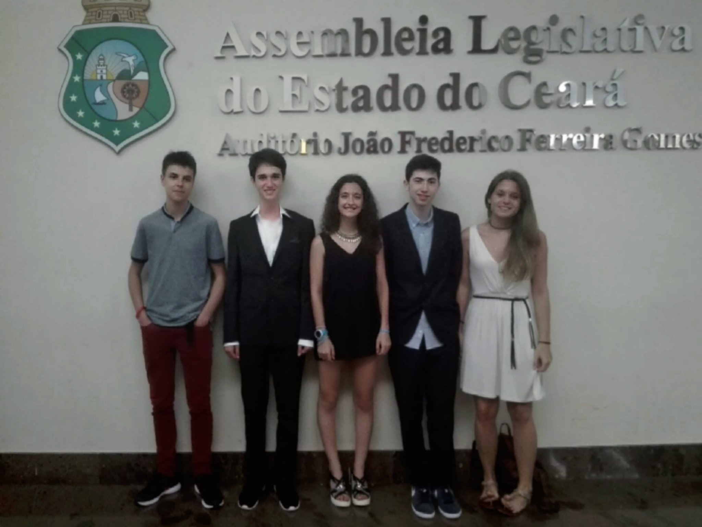ExpoMilset Brasil
"MILSET es una organización juvenil no gubernamental, sin ánimo de lucro y políticamente independiente, cuyo objetivo es desarrollar la cultura científica entre los jóvenes mediante la organización de programas de ciencia y tecnología, incluyendo ferias de ciencia , campos de ciencia, congresos y otras actividades de alta calidad.
Está presente en todos los continentes del mundo y tiene vínculo directo con instituciones de enseñanza que conectadas benefician a miles de estudiantes de todo el mundo."Competición a nivel mundial. Resultado: 3. Premio en la categoría "software y programación".
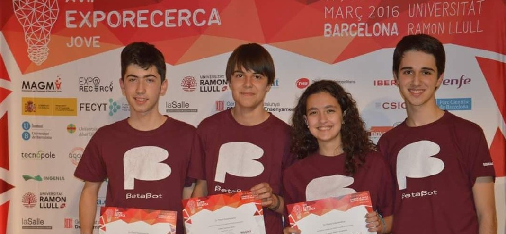ExpoRecerca 2016
Exporecerca Joven es una feria internacional de investigación celebrada anualmente en Barcelona. Sus objetivos son favorecer la investigación entre los jóvenes, promover el intercambio de experiencias y conocimiento y potenciar la participación en otras ferias y congresos de ámbito nacional e internacional. Este año se celebrará en La Farga de L'Hospitalet durante la exposición Yomo Barcelona, tiene una duración de tres días y acumula un total de 20 ediciones.
Competición a nivel de España. 2. Premio en la categoría ESO.
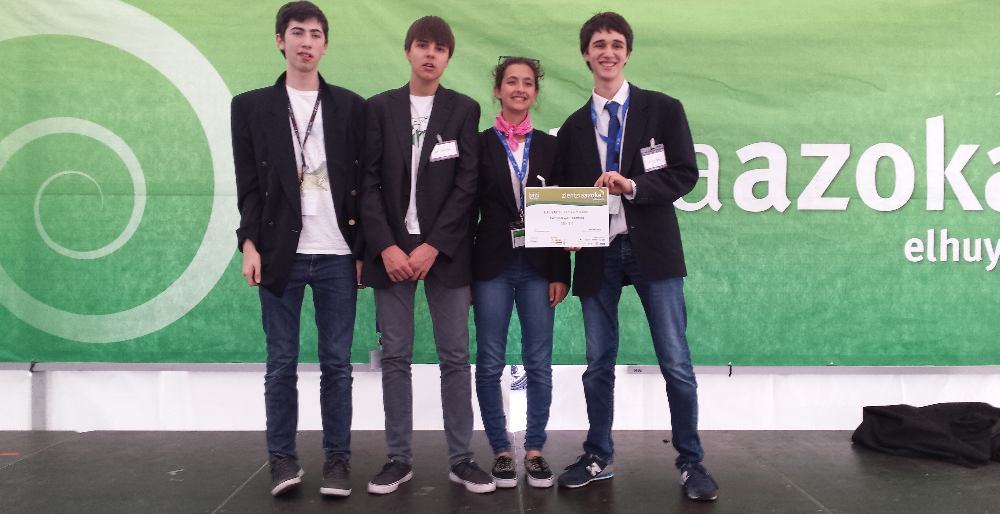Zientzia Azoka
"La iniciativa Zientzia Azoka es una feria que acoge proyectos realizados por jóvenes; una oportunidad de vivir y conocer de cerca la investigación científica y el desarrollo tecnológico. El resultado de dicho trabajo es un proyecto de investigación o un proyecto tecnológico que presentarán en su propio stand en la Zientzia Azoka que organizaremos en la Plaza Nueva de Bilbao. Las chicas y los chicos que participen contarán con la ayuda de profesionales en la investigación que les ayudarán en sus respectivos trabajos."
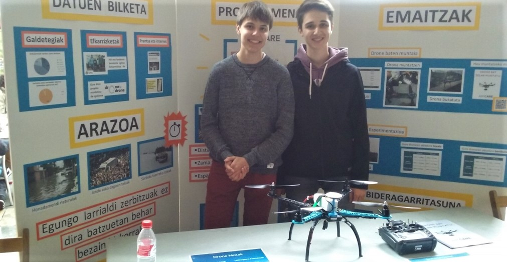Zientzia Azoka 2016
Resultado: Premio a la mejor presentación y comunicación.
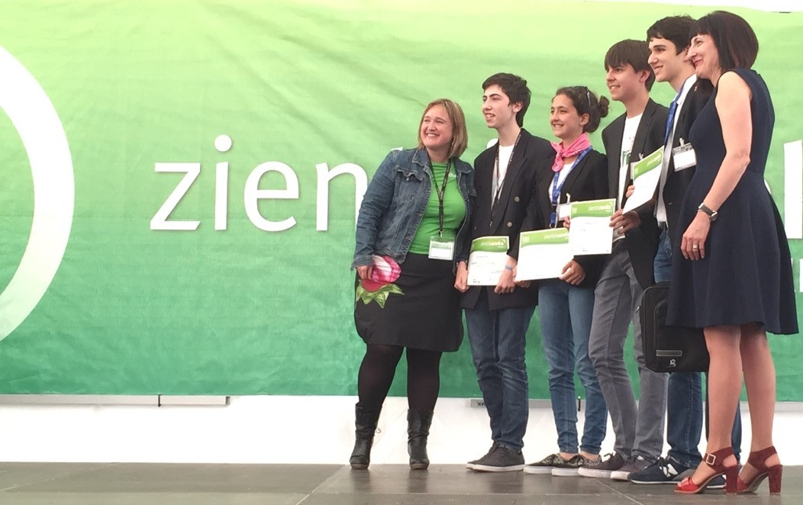Zientzia Azoka 2015
Resultado: Primer premio de la categoría ESO. "Premio al trabajo más completo". Clasificación directa para "Galiciencia 2015".
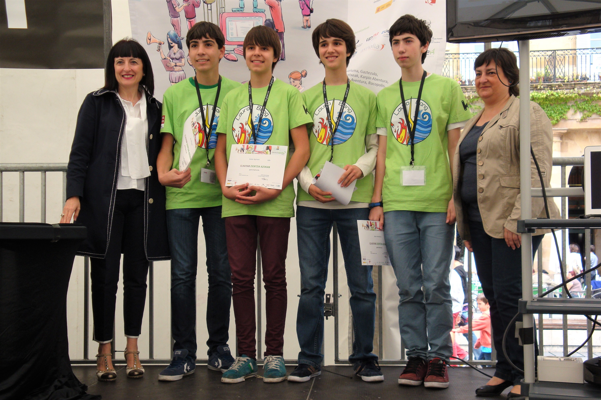Zientzia Azoka 2014
Resultado: Primer premio de la categoría 3º y 4º de la ESO.
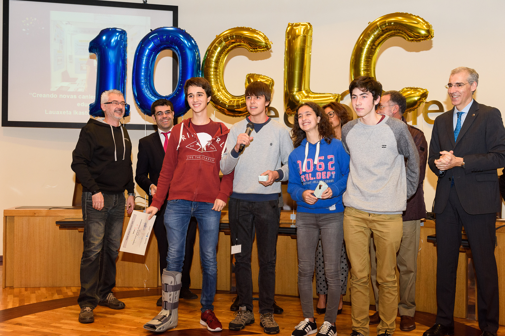Galiciencia 2015
"Galiciencia es una feria de 3 días de duración en la que los estudiantes presentan los proyectos que desarrollaron de forma previa la feria con apoyo de sus profesores/as. Dichos proyectos utilizan el método científico relacionado tanto con las Ciencias Experimentales como con las Ciencias Sociales y son expuestos y explicados tanto al público visitante como a un jurado cualificado."
Resultado: Primer premio de la 10ª edición. Clasificación para ExpoRecerca 2016.
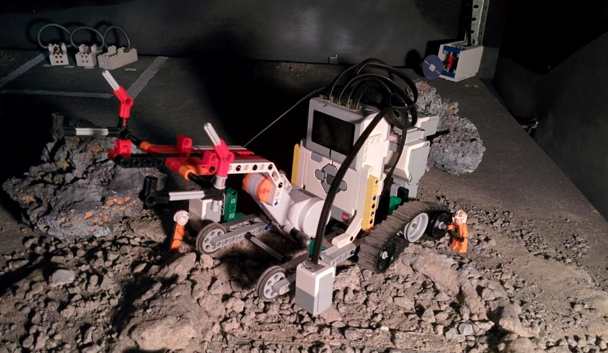Moonbots, A Google Lunar Xprize
"El desafío MOONBOTS 2015, también considerado como el 'Google Lunar XPRIZE para jóvenes'. Se trata de una competición internacional que inspira a la próxima generación de exploradores espaciales e innovadores invitando a niños de 8 a 17 años a diseñar, crear y programar su propio vehículo lunar, sobre la base de una leyenda o teoría acerca de la luna que los inspire."
Resultado: Clasificado para la final mundial.
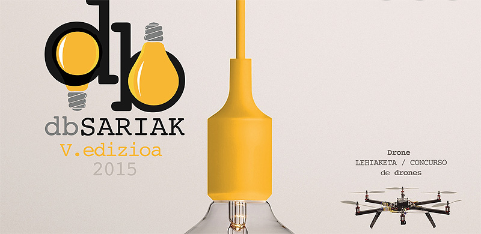Don Bosco Sariak
"La iniciativa dbSariak consiste en promover la ciencia, la tecnología, la ingeniería, el trabajo en equipo, promover el arte y los campos de las matemáticas (STEAM), en los estudiantes del educación secundaria y formación profesional. Estos premios promueven el espíritu creador e innovador de los estudiantes del ámbito educativo."
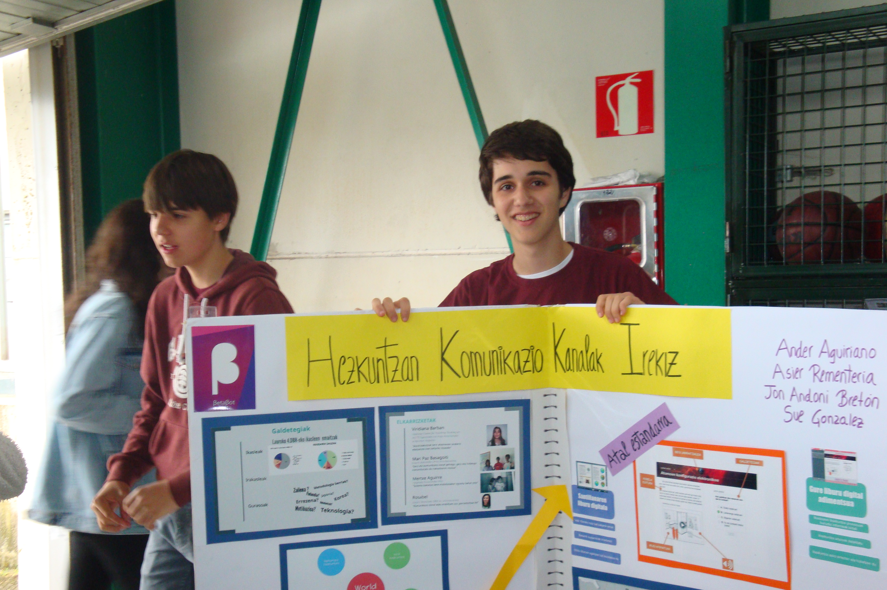Don Bosco Sariak 2015
Resultado: Primer premio
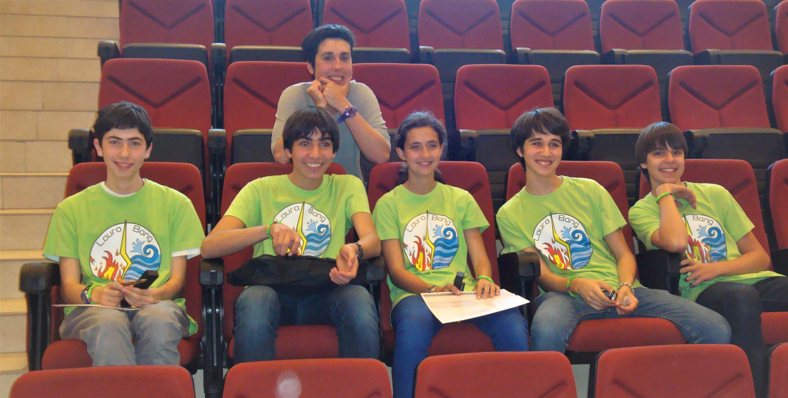Don Bosco Sariak 2014
Resultado: Primer premio
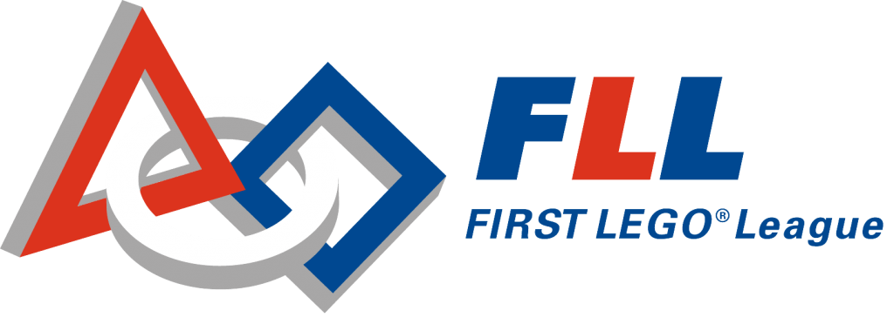First LEGO League
"FIRST LEGO League es el programa para jóvenes de 10 a 16 años que permite descubrir la diversión por la ciencia, la tecnología, la ingeniería y las matemáticas (STEM) mientras resuelven problemáticas reales a través de un aprendizaje significativo y lúdico.
El programa inspira a los jóvenes a crear ideas, resolver problemas y superar obstáculos, a la vez que les permite ganar confianza en el uso apropiado de la tecnología y aprender procesos de diseño propios de la ingeniería. Los participantes colaboran, cooperan y desarrollan habilidades de trabajo en equipo imprescindibles en un mundo laboral dinámico y en constante cambio." 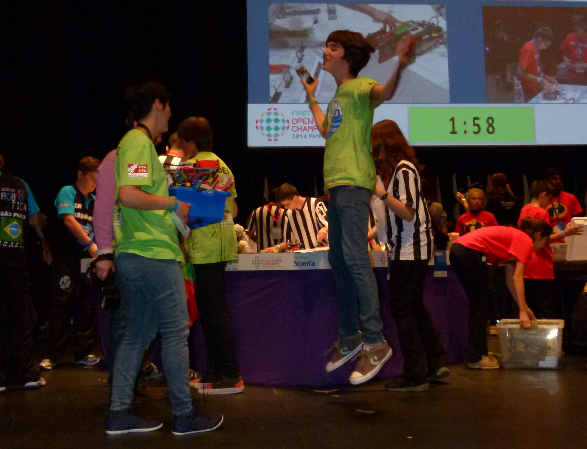FLL Open European Championship 2014
Resultado: 6 nominaciones en las categorías de "Proyecto Científico" y "Proyecto Técnico".
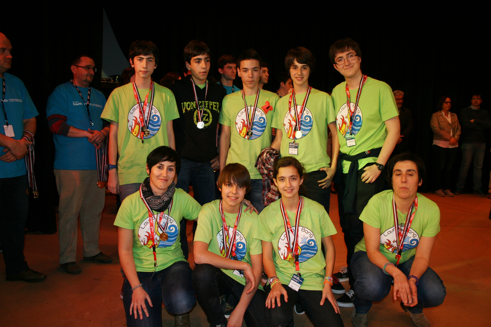FLL Spain 2014
Resultado: Premio a la innovación y estrategia. Clasificación para FLL Open Euroepan Chanpionship.
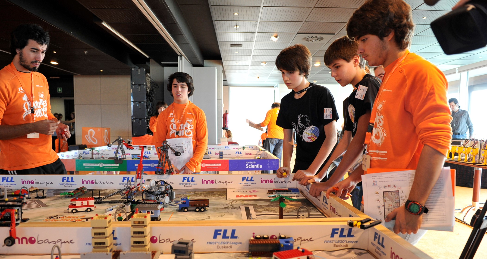FLL Euskadi 2013
Resultado: 2. premio. Clasificación a FLL España 2014.
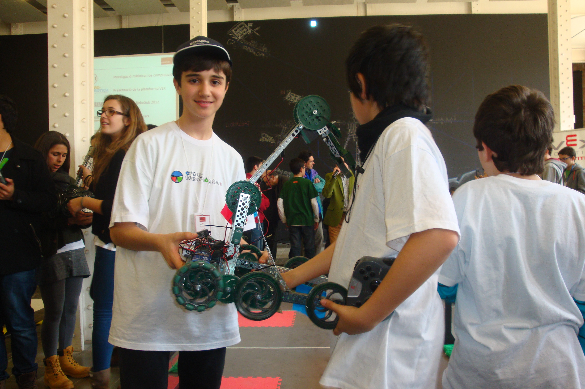VEX Robotics
"Las competencias VEX dan vida a las habilidades de STEM asignando equipos de estudiantes para el diseño y construcción de un robot para jugar contra otros equipos en un desafío de ingeniería basado en juegos. Los conceptos STEM del aula se ponen a prueba a medida que los estudiantes aprenden habilidades para toda la vida en trabajo en equipo , liderazgo , comunicaciones y más."
Resultado: Clasificación Final de España